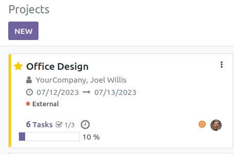
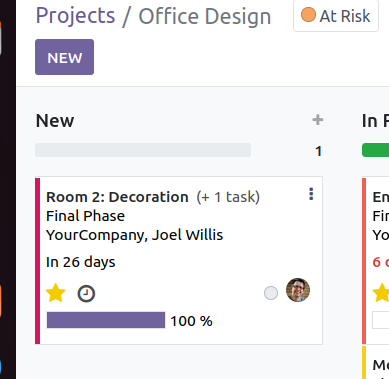
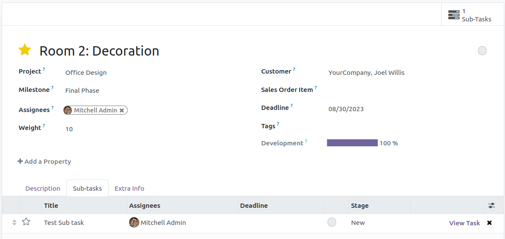
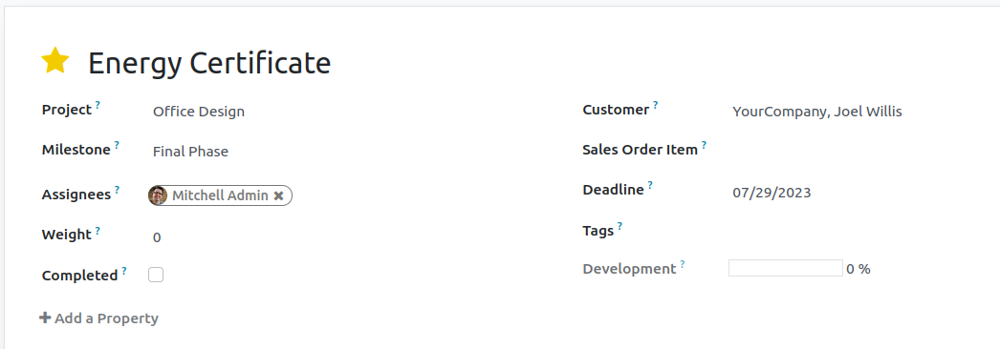

Project Progress
The overall progress of the project will be shown in kanban and form view

Task Progress
The progress of the task depends on sub-tasks if exists or on the completion of itself.

Weight and Sub-Tasks
Weight of each tasks in project and sub-tasks in the task can be set. The final value is calculated only after it has been set completed
 
The total weight of all tasks in a project or sub-tasks in a task must be 100.
If any task has subtask they cannot be set completed